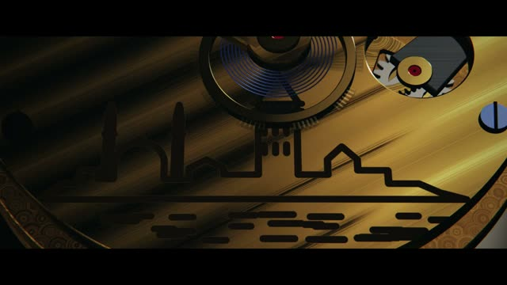
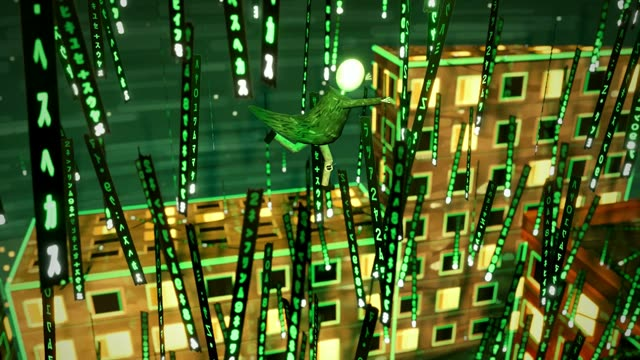
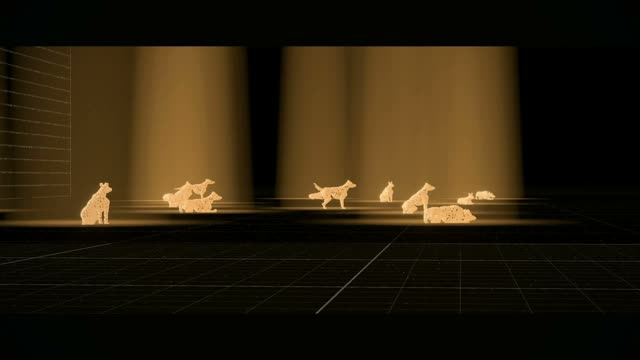
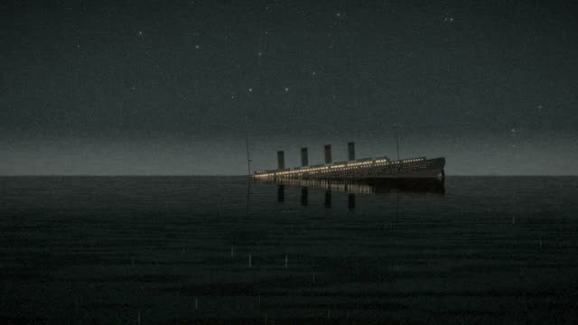
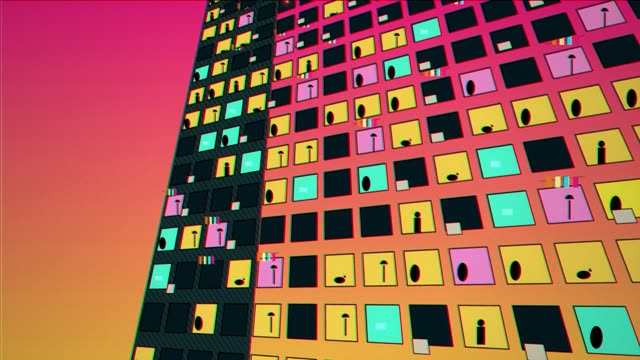
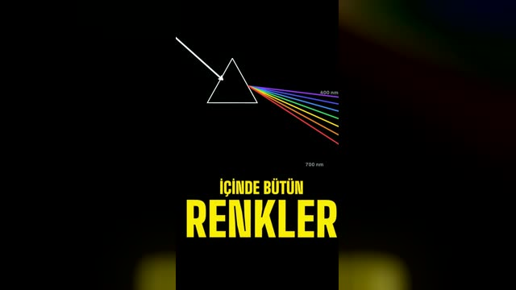
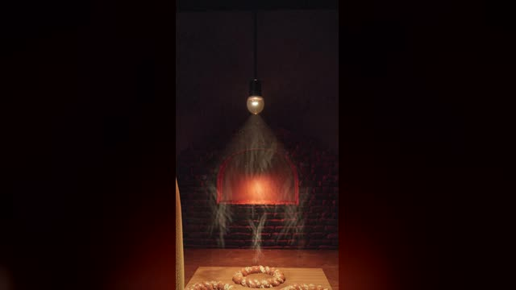

작업 흐름
- 입력
- 한 줄 아이디어, 제품 · 브랜드, 노래 파일, 참고 영상, 직접 찍은 영상 중 하나
- 질문 · 카드
- 모드(Quick · Film)와 목적, 해석 2–3개, 매체와 룩 선택, 초 단위 비트와 디렉터 카드
- 스틸 · 초안
- 핵심 장면 스틸 채점, 절반 크기 초안, 최대 두 번의 수정, 자동 점검(훅, 장면별 동작, 음량)
- 출력
<title>.mp4(−14 LUFS), 출처가 있으면<title>-credits.txt, 저장해 다시 쓰는 형식
# Claude Code에 설치
cp -r cinecode ~/.claude/skills/cinecode
# 예제 재생 (클릭하면 소리와 함께 재생)
open cinecode/examples/first-sprout/film.html
# 빈 폴더에서 Claude Code를 열고
# "단편 영화 만들어줘" · "make a short film about …"요구 사항: Node 22+, Python 3, ffmpeg, Chrome 또는 Chromium. 단계별 순서는 SKILL.md에 있습니다.
샘플
새 주제로 만든 예제 한 편과 원본 저장소에 실린 영화들입니다. 예제 카드를 누르면 라이브 데모가, 원본 카드를 누르면 원본 저장소의 소개가 열립니다.
「First Sprout」 브리프에서 새로 설계 · Quick 모드
원본 영화들에 없는 주제(씨앗의 발아)를 브리프 → 제작 카드 → 스틸 채점 → 초안 순서로 만든 12초 무언 종이 콜라주 영화입니다.
원본에서 만든 영화 sarpstar/cinecode
원본 저장소 README에 실린 작품의 스틸입니다(MIT). 장르와 길이가 다른 영화를 같은 킷으로 만들었습니다.
단편 · 90초Motor멈춘 순간들
단편 · 25초The Mail Train리노컷 여행

광고 · 50초İlk Tik시계 광고

단편 · 50초Atlama Programı미니어처 오마주
단편 · 80초Boş Koltuk스스로 지어지는 촬영장

데이터 다큐 · 90초Yüz Köpek개 백 마리의 데이터 다큐멘터리

다큐 · 5분Titanik, Son Saatler마지막 몇 시간의 다큐멘터리

홍보 · 60초cinecode팝아트 홍보 영상
애니메이션 · 60초Fener애니메이션 동화

설명 · 45초 · 9:16Gökyüzü neden mavi?하늘은 왜 파란가 설명 영상

광고 · 15초 · 9:16Kuzguncuk Fırın동네 빵집 광고
그래픽 단편 · 63초 · 9:16Tek Kibrit성냥 한 개비의 그래픽 단편
링크
- SKILL.md 워크플로
- 폴더 scripts · references · templates · starter · styles · tests
- README.md 빠른 시작
- references/BRIEF.md 주제 → 제작 카드, 스틸 채점 기준
- references/quick-mode.md Quick 모드
- references/film-mode.md Film 모드
- references/LESSONS.md 겪은 문제와 해결